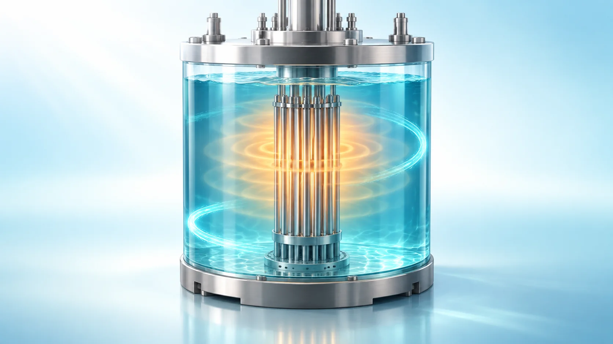
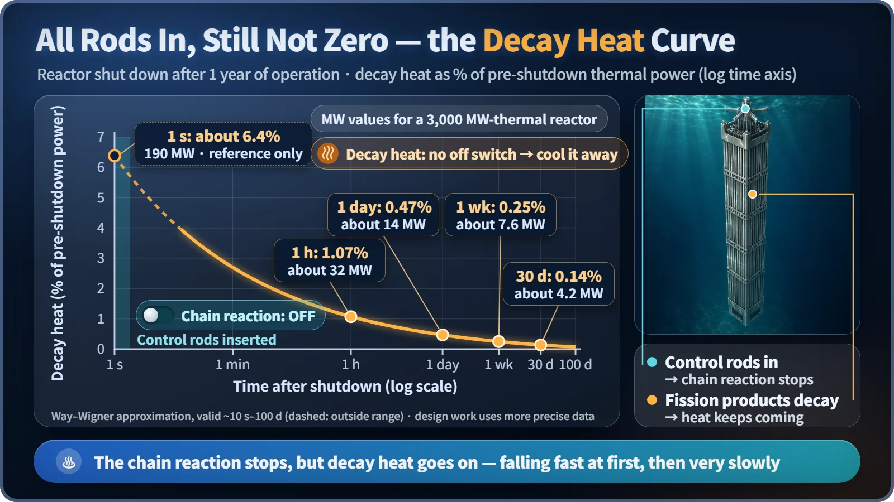
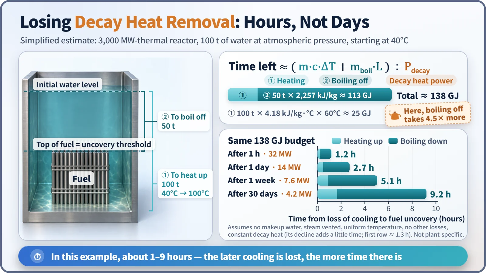

Safety Principles & Accident Analysis · 216
A Pot on a Flame You Can't Turn Off — Why Losing Residual Heat Removal Is So Dangerous
Control rods stop fission in seconds, but decay heat has no off switch. A simple water budget shows why the first hours matter most.

Control rods stop the chain reaction within seconds, but they cannot stop the fission products already in the fuel from decaying and producing heat. That decay heat falls quickly at first and then very slowly, and if nothing carries it away, the water covering the fuel heats up, boils and drops. In a simple example the margin is measured in hours, not days. [1]
A flame you can't turn off
Picture a gas stove whose knob has jammed so the burner can't be shut off. The flame slowly weakens on its own, but it never quite goes out, and a pot of water sits on top. Leave it alone and the water warms, boils, cooks down, and eventually the bottom of the pot scorches.
That is almost exactly the situation inside a reactor after it shuts down. Here is why this flame can't be switched off, and why a failure of residual heat removal is taken so seriously.
Some heat ignores the control rods
Stopping a reactor is the job of the control rods. They soak up neutrons and halt the chain reaction in which uranium nuclei split (fission). That part is over within seconds.
The trouble is the fragments left behind. These fission products are mostly unstable: on their own they give off radiation and turn into other atoms, a process called radioactive decay, and the energy released becomes heat inside the fuel. That heat is decay heat. [1]
Control rods prevent new fissions, but they can't stop existing fragments from decaying. The pace of decay is set by each atom's half-life, the time for half of a batch to decay. There is no switch to press, which is why decay heat is often called "the heat you can't turn off."
Residual heat means decay heat plus the heat still stored in the fuel and structures. After a short while, decay heat is practically all of it, so the two words are often used interchangeably.
How fast does the flame die down?
A 1948 approximation by Katharine Way and Eugene Wigner gives a good estimate:
P(t)/P₀ ≈ 0.066 × [ t^(−0.2) − (t + T)^(−0.2) ]
P₀ is the thermal power before shutdown, t is the time since shutdown in seconds, and T is how long the reactor ran beforehand. For a reactor that has run for a long time, the values are roughly as follows (they vary a little with the formula and data used). [2] [3] [4]
| Time after shutdown | Decay heat (share of prior power) |
|---|---|
| Right after shutdown | about 6–7% |
| 1 hour | about 1–1.5% |
| 1 day | about 0.5% |
| 1 week | about 0.2–0.3% |

The curve plunges during the first hour, then shrinks very slowly: short-lived atoms disappear first, while long-lived ones linger and keep producing heat. Real design analyses use more precise data, such as the American Nuclear Society standard ANS-5.1. [5]
"Only 6%?" A small fraction of a big number is still big. For a reactor producing 3,000 megawatts (MW) of heat, that's about 190 MW right after shutdown and still about 30 MW an hour later, like leaving 15,000 household space heaters (2 kW each) running.
So when does the pot boil dry?
Suppose cooling is lost completely. How long does the water hold out? One line is enough:
Time available ≈ ( m·c·ΔT + mboil·L ) ÷ decay heat
The first term is the heat needed to bring water of mass m up to its boiling point (c is the specific heat, the heat to raise 1 kg of water by 1°C; ΔT is the temperature rise). The second term is the heat needed to turn water into steam; L is the latent heat of vaporization, about 2,257 kJ to boil away 1 kg of water.
Take a simplified, illustrative case: 100 tonnes of water cover the fuel of a 3,000 MW reactor, starting at 40°C and atmospheric pressure, and the fuel begins to be uncovered once the 50 tonnes above the top of the fuel have boiled away.

| Cooling lost at | Decay heat | Top of fuel uncovered after |
|---|---|---|
| 1 hour after shutdown | 32 MW | about 1.2 hours |
| 1 day after | 14 MW | about 2.7 hours |
| 1 week after | 7.6 MW | about 5 hours |
| 30 days after | 4.2 MW | about 9 hours |
Heating 100 tonnes to 100°C takes about 25 GJ; boiling off 50 tonnes takes about 113 GJ. In this example, boiling the water away takes 4.5 times more heat than warming it, the same reason a kettle takes ages to boil dry once it has started boiling. That is what makes water such a good buffer.
Dividing the total of about 138 GJ by the decay heat gives the times above. Because decay heat keeps falling meanwhile, the real figures would be slightly longer.
These numbers only show the scale. A real reactor runs at about 300°C and about 150 atmospheres, and the amount of water differs from system to system. Take away two points: under conditions like these it is hours, not days, and the later cooling is lost, the more time there is. [3]
The threshold: fuel out of the water
Once fuel pokes above the water, steam has to carry the heat, and steam does that far less effectively than water. Heat keeps coming while its escape route narrows, so the fuel temperature climbs quickly and the metal tubes around the fuel (the cladding) approach the threshold of damage.
At Fukushima Daiichi Unit 1 in 2011, analyses concluded that core damage began only a few hours after the unit lost power and cooling, while the decay heat curve was still near its peak. [6]
A pool holding spent fuel that left the reactor long ago is different: its decay heat is small and it holds far more water, so even if cooling stops there is generally a margin measured in days. [2]
No switch, so build many paths
Heat removal is one of the most fundamental safety functions after shutdown, and how long a plant can hold out after losing all AC power comes down to the same graph. Since decay heat can't be switched off, the only answer is to keep its exit routes from being cut: several layers of cooling paths, equipment that works without electricity, and separate water supplies.
Key takeaways
Decay heat comes from fission products that keep decaying after the chain reaction stops, so no control rod can turn it off. It starts at about 6–7% of full power and falls fast, then slowly. Without heat removal, water boils away on a scale of hours, so protecting the first few hours matters most; after that, time increasingly works in your favor.